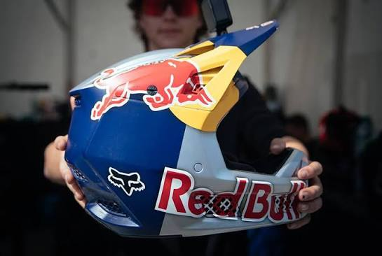

Casco integral
El casco integral está diseñado para proteger la cabeza y proporcionar cobertura alrededor del rostro y la mandíbula.

La protección es fundamental para practicar ciclismo de montaña.
El casco integral está diseñado para proteger la cabeza y proporcionar cobertura alrededor del rostro y la mandíbula.
